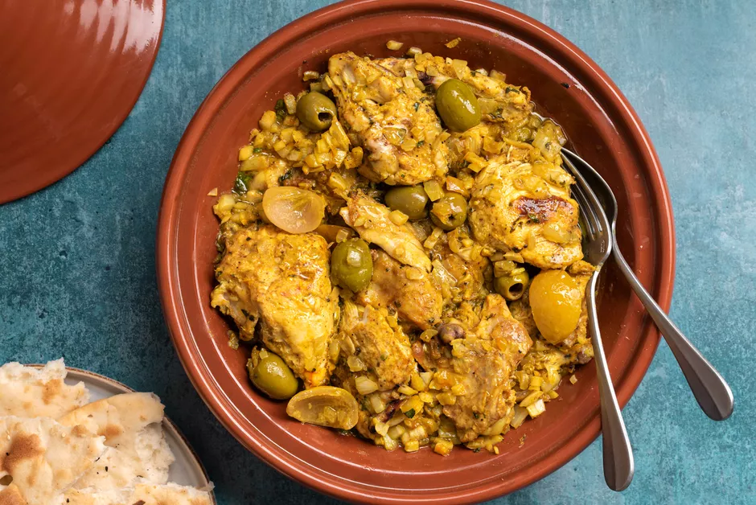

Moroccan Tagine

Description
A classic dish, this Moroccan chicken recipe uses preserved lemons, olives, and onions. It can be cooked in an authentic tagine or roasted in the oven, depending on your preference, and what equipment you have at your disposal. Either way, you'll enjoy a delicious meal that is sure to please everyone at the dinner table.
To the unfamiliar, tagine can be a little confusing, because it's both the name of the dish, and the vessel in which the dish is cooked. Typically made of clay or ceramic, the tagine is used in northern African cuisine, and it is distinguished by its wide, circular base and a cone-shaped top. The tagine functions like a slow cooker in a sense, and the cone shape functions as a way to return moisture to the base of the tagine, creating a moist and flavorful dish.
Ingredients
- 1 to 2 preserved lemons, quartered and seeds removed
- 1 whole chicken, cut into pieces, skin removed, back discarded or reserved for another use
- 2 large white or yellow onions, finely chopped
- 2 to 3 cloves garlic, minced
- 1 small handful fresh cilantro, chopped
- 1 small handful fresh parsley, chopped
- 2 teaspoons powdered ginger
- 2 handfuls pitted olives (green or red, or mixed)
- 1/3 cup olive oil
Steps
- Gather the ingredients.
- Remove the flesh from the preserved lemons and chop the flesh finely. Reserve rind for cooking.
- Add the lemon flesh to a bowl along with the chicken, onion, garlic, cilantro, parsley, ginger, pepper, turmeric, and salt. If using, add the saffron, ras el hanout, and smen. Mix well.
- Add enough of the olive oil to the tagine to coat the bottom.
- Arrange the marinated chicken in the tagine, flesh-side down, and distribute the onions all around.
- Add the olives and reserved rind of the preserved lemons, and drizzle the remaining olive oil over the chicken.
- Add the water to the tagine, cover, and place on a heat diffuser over medium-low heat.
- Allow the chicken to cook undisturbed for 80 to 90 minutes.
- Turn off the heat, and let the tagine cool for about 10 to 15 minutes before serving. Enjoy.